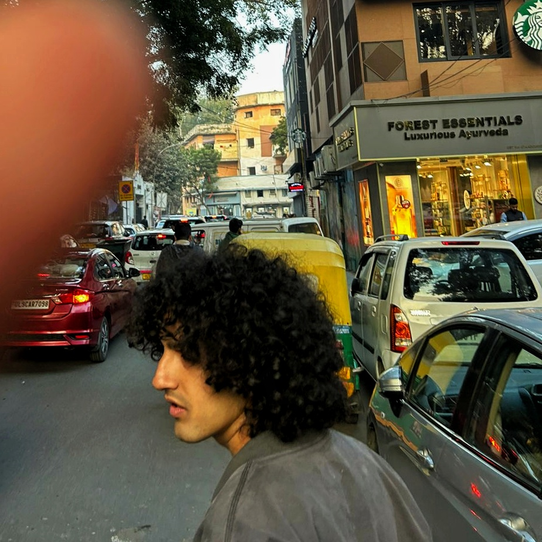
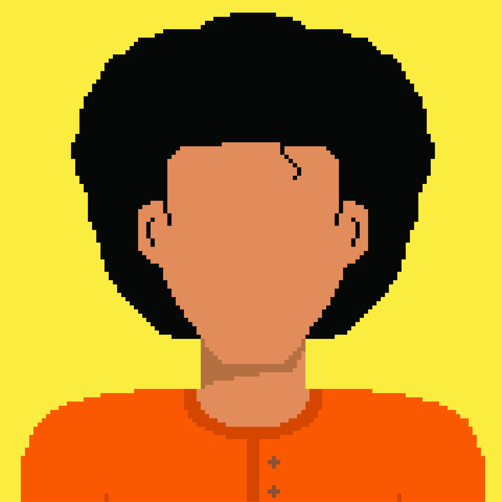
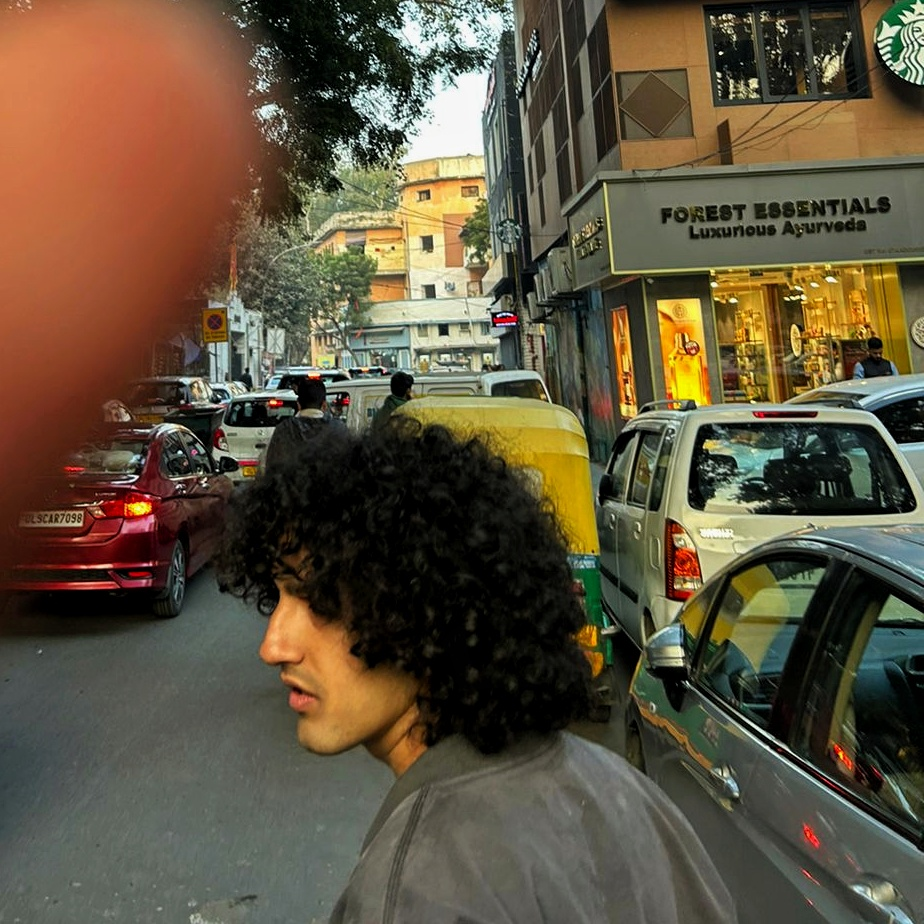
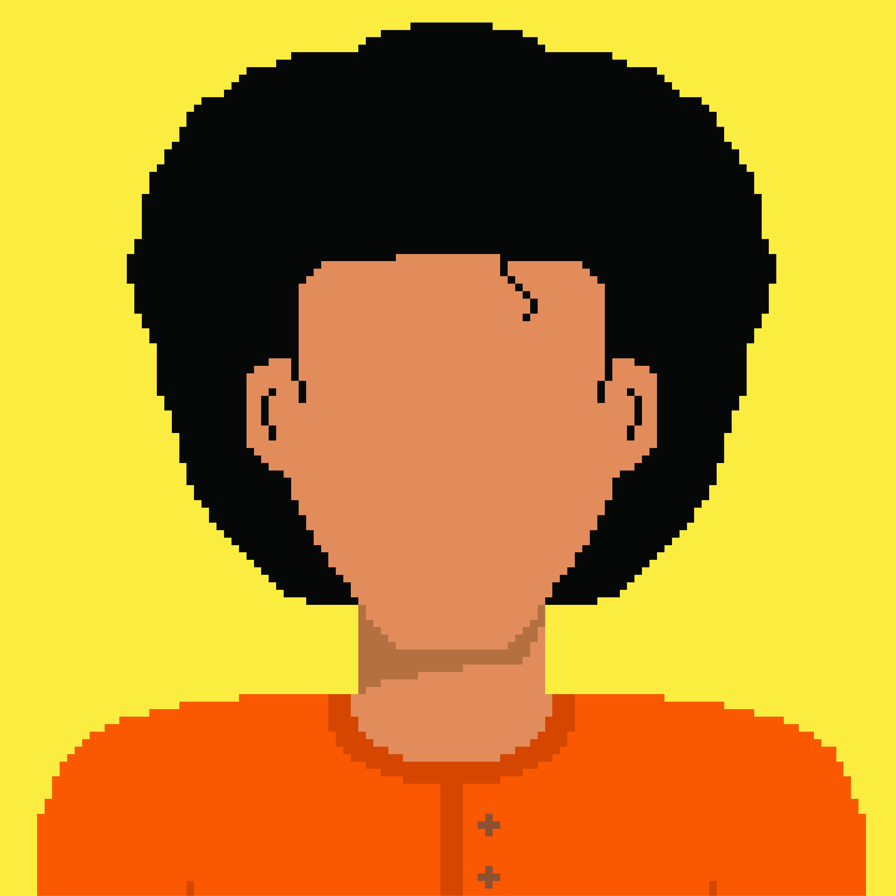

For long, I've tried to label what category the things I do fall in. Now, I've given up trying to find the right label for them. I find many, many things fascinating. I try a lot of stuff, and for the most part I have realised that being interested in many thing has helped me develop a much better appreciation for the wonderful creations around me (and on the internet). So, this is where I try to document what I've been up to, and what I've found interesting recently. So go ahead, wander around here, and see if you find something interesting!
 

It's all me


It's all me